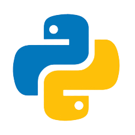
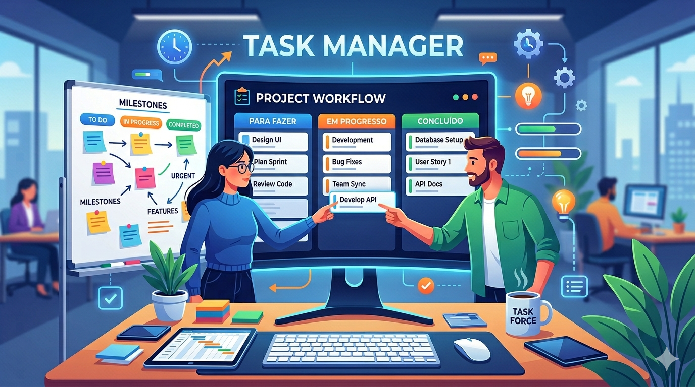
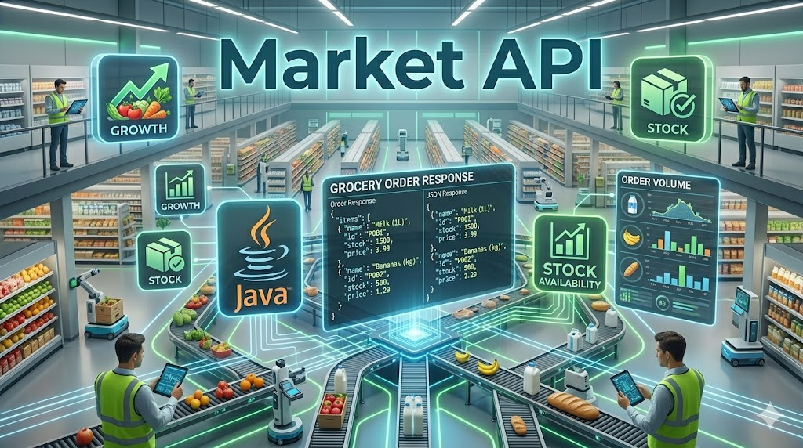

Guilherme Bifani de Santana
Desenvolvedor Backend Java


Desenvolvedor Backend Java

Desenvolvedor backend focado em Java e Spring Boot, apaixonado por tecnologia e resolução de problemas. Atualmente curso Análise e Desenvolvimento de Sistemas e desenvolvo projetos utilizando Java, Node, Python e SQL, sempre buscando criar aplicações organizadas, eficientes e bem estruturadas. Tenho interesse especial em desenvolvimento backend, APIs REST e boas práticas de engenharia de software. Também possuo noções de frontend com HTML, CSS, JavaScript, React e Angular, o que me permite compreender melhor a integração entre interface e backend no desenvolvimento de aplicações web. Estou constantemente aprendendo novas tecnologias para evoluir como desenvolvedor.
Sistema web desenvolvido com inteligência artificial para planejamento de viagens, permitindo recomendações personalizadas, organização de roteiros e melhor experiência do usuário através de uma interface intuitiva.

Sistema backend desenvolvido com Java e Spring Boot para gerenciamento de tarefas, permitindo criação, atualização e organização de atividades através de endpoints REST estruturados e integrados ao banco de dados.

Sistema backend desenvolvido com Java e Spring Boot para simulação de operações de mercado, permitindo cadastro e gerenciamento de produtos através de endpoints REST organizados e escaláveis.